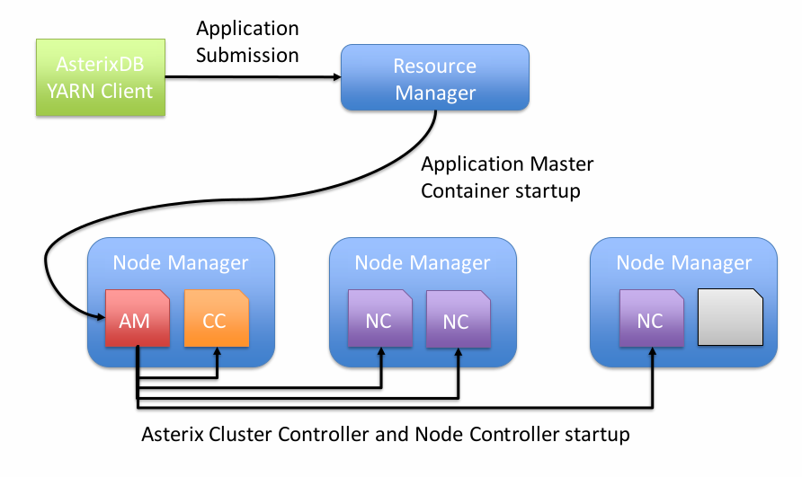
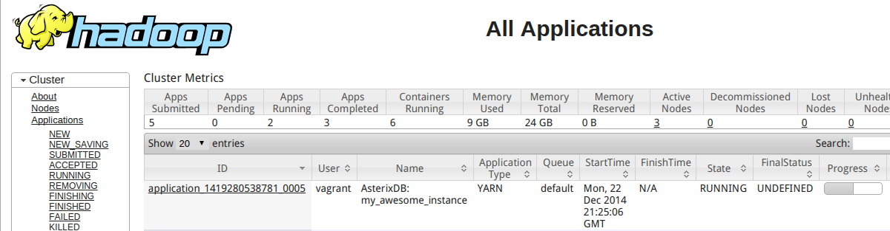
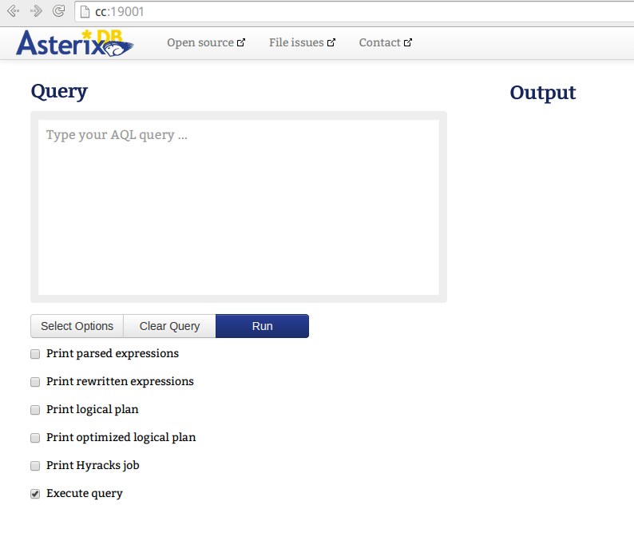

Introduction
Table of Contents
- Architecture Overview
- Prerequisites
- Tutorial Installation
- FAQ and Common Issues
- Reference guide to AsterixDB’s YARN Client
This is a guide describing how to deploy AsterixDB onto a YARN-based environment.
AsterixDB and the YARN environment
AsterixDB uses a shared-nothing architecture and local file-based storage- not HDFS. Hence we are reliant on the local storage on each node (‘iodevices’ in AsterixDB ). In YARN there are 3 main types of storage available:
- HDFS file storage (only suitable for long-lived artifacts, can be slower than local disk)
- Ephemeral container storage that is cleaned by YARN after a container exits (unsuitable except for transient artifacts)
- Node-local destinations not managed by YARN, but which are accesable by the container and live beyond its termination.
AsterixDB uses only the last type of storage, which is available with both the DefaultContainerExecutor and LinuxContainerExecutor. However keep in mind that with the DefaultContainerExecutor, the directory must be accessable by the same process that the YARN NodeManager is running as, while with the LinuxContainerExecutor it must be accessable by the unix user who is running the job.
Prerequisites
For this tutorial it will be assumed that we have a YARN cluster with the proper environment variables set. To test this, try running the DistributedShell example that is distributed as part of Apache Hadoop. If that sample application can be run successfully then the environment should be acceptable for launching AsterixDB on to your YARN-enabled cluster.
Vagrant and Puppet Virtualized cluster for Tutorial
For the purposes of this tutorial, a virtualized cluster that matches all of the tutorial configurations can be found at https://github.com/parshimers/yarn-sample-cluster. It requires a machine with about 4-8GB of RAM to run. To start with this cluster, first clone the repository:
↪ git clone https://github.com/parshimers/yarn-sample-cluster.git
Cloning into 'yarn-sample-cluster'...
remote: Counting objects: 490, done.
remote: Compressing objects: 100% (315/315), done.
remote: Total 490 (delta 152), reused 490 (delta 152)
Receiving objects: 100% (490/490), 521.34 KiB | 201.00 KiB/s, done.
Resolving deltas: 100% (152/152), done.
Checking connectivity... done.
If the ‘hostmanager’ plugin for Vagrant isn’t already installed, install it like so:
↪ vagrant plugin install vagrant-hostmanager
Installing the 'vagrant-hostmanager' plugin. This can take a few minutes...
Installed the plugin 'vagrant-hostmanager (1.5.0)'!
Then start the tutorial cluster. The hostmanger plugin may ask for sudo at some point, because it updates your hosts file to include the virtual machines.
↪ vagrant up
Bringing machine 'nc2' up with 'virtualbox' provider...
Bringing machine 'nc1' up with 'virtualbox' provider...
Bringing machine 'cc' up with 'virtualbox' provider...
...
Once vagrant returns, the environment will be ready. The working directory with the Vagrantfile is also visible to each of the virtual machines (in the /vagrant directory), so we will unzip the Asterix binaries here as well for easy access. The YARN binary can be found on the AsterixDB downloads page
↪ unzip -d asterix-yarn/ asterix-yarn-binary-assembly.zip ...
To log into the node from which we will run the rest of the tutorial, use ‘vagrant ssh’ to get to the CC node and move to the YARN client’s location:
↪ vagrant ssh cc
[vagrant@cc ~]$
[vagrant@cc ~]$ cd /vagrant/asterix-yarn
[vagrant@cc asterix-yarn]$
Tutorial installation
Configuration
To deploy AsterixDB onto a YARN cluster, we need to construct a configuration file that describes the resources that will be requested from YARN for AsterixDB.
 Fig. 1: Illustration of a simple YARN cluster with AsterixDB processes and their locations
This AsterixDB cluster description file corresponds to the above deployed scenario.
<cluster xmlns="yarn_cluster">
<name>my_awesome_instance</name>
<txn_log_dir>/home/yarn/</txn_log_dir>
<iodevices>/home/yarn/</iodevices>
<store>asterix-data</store>
<master_node>
<id>cc</id>
<client_ip>10.10.0.2</client_ip>
<cluster_ip>10.10.0.2</cluster_ip>
<client_port>1098</client_port>
<cluster_port>1099</cluster_port>
<http_port>8888</http_port>
</master_node>
<node>
<id>nc1</id>
<cluster_ip>10.10.0.3</cluster_ip>
</node>
<node>
<id>nc2</id>
<cluster_ip>10.10.0.4</cluster_ip>
</node>
<metadata_node>nc1</metadata_node>
</cluster>
In this example we have 3 NCs and one CC. Each node is defined by a unique name (not necessarily hostname) and an IP on which AsterixDB nodes will listen and communicate with eachother. This is the ‘cluster_ip’ parameter. The ‘client_ip’ parameter is the interface on which client-facing services are presented, for example the web interface. For the next step this file will be saved as ‘my_awesome_cluster_desc.xml’ in the configs directory.
Installing and starting the instance
With this configuration in hand, the YARN client can be used to deploy AsterixDB onto the cluster:
[vagrant@cc asterix-yarn]$ bin/asterix -n my_awesome_instance -c configs/my_awesome_cluster_desc.xml install
Waiting for new AsterixDB Instance to start .
Asterix successfully deployed and is now running.
The instance will be visible in the YARN RM similar to the below image
 Fig. 2: Hadoop YARN Resource Manager dashboard with running AsterixDB instance
Once the client returns success, the instance is now ready to be used. We can now use the asterix instance at the CC’s IP (10.10.0.2), on the default port (19001).
 Fig. 3: AsterixDB Web User Interface
From here, to try things out we could run the ADM & AQL 101 tutorial or any other sample workload.
Stopping the instance
To stop the instance that was just deployed, the stop command is used:
[vagrant@cc asterix-yarn]$ bin/asterix -n my_awesome_instance stop
Stopping instance my_awesome_instance
This attempts a graceful shutdown of the instance. If for some reason this does not succeed, the kill action can be used to force shutdown in a similar fashion:
[vagrant@cc asterix-yarn]$ bin/asterix -n my_awesome_instance kill
Are you sure you want to kill this instance? In-progress tasks will be aborted
Are you sure you want to do this? (yes/no): yes
Managing stopped instances
After stopping the instance no containers on any YARN NodeManagers are allocated. However, the state of the instance is still persisted on the local disks (and to a lesser extent, HDFS) of each machine where a Node Controller was deployed, in the iodevices and transaction log folders. Every instance, running or not can be viewed via the describe action:
[vagrant@cc asterix-yarn]$ bin/asterix describe
Existing AsterixDB instances:
Instance my_awesome_instance is stopped
Starting inactive instances
To start the instance back up once more, the start action is used:
[vagrant@cc asterix-yarn]$ bin/asterix -n my_awesome_instance start
Waiting for AsterixDB instance to resume .
Asterix successfully deployed and is now running.
Shutting down vagrant
To stop the virtual machines, issue the vagrant halt command from the host machine in the folder containing the Vagrantfile:
↪ vagrant halt
Listing of Commands and Options
Overview
All commands take the format
asterix [action-specific option] [action]
Technical details
AsterixDB’s YARN client is based on static allocation of containers within Node Managers based on IP. The AM and CC processes are currently not integrated in any fashion.
The asterix command itself is simply a wrapper/launcher around the AsterixClient java class, that provides time-saving default parameters. It is possible to run the client directly with java -jar given the correct options as well.
Actions
Below is a description of the various actions available via the AsterixDB YARN client
| Action | Description |
|---|---|
| start | Starts an existing instance specified by the -name flag |
| install | Deploys and starts an AsterixDB instance described by the config specified in the -c parameter, and named by the -n parameter |
| stop | Attempts graceful shutdown of an AsterixDB instance specified in the -name parameter |
| kill | Forcefully stops an instance by asking YARN to terminate all of its containers. |
| destroy | Remove the instance specified by -name and all of its stored resources from the cluster |
| describe | Show all instances, running or not, visible to the AsterixDB YARN client |
| backup | Copies the artifacts from a stopped instance to another directory on HDFS so that the instance can be reverted to that state |
| restore | Restores an instance to the state saved in a snapshot |
| lsbackup | Lists the stored snapshots from an instance |
| rmbackup | Removes a snapshot from HDFS |
| libinstall | Installs an external library or UDF for use in queries |
Options
Below are all availabe options, and which actions they can be applied to
| Option | Long Form | Short Form | Usage | Applicability |
|---|---|---|---|---|
| Configuration Path | -asterixConf | -c | -c [/path/to/file]. Path to an AsterixDB Cluster Description File | Only required with create . A configuration in DFS defines the existance of an instance. |
| Instance Name | -name | -n | -n [instance name] Name/Identifier for instance. | Required for all actions except describe and lsbackup |
| Asterix Binary Path | -asterixTar | -tar | -tar [/path/to/binary] Path to asterix-server binary. | This is the AsterixDB server binary that is distributed and run on the DFS. Usually set by default via the launcher script and cached for each instance. Can be manually set, only used in create and install with -r |
| Force | -force | -f | -f. Use at your own risk. Disables any sanity-checking during an action. | Can be applied to any action, but is mostly useful in cases where an instance cannot be removed properly via destroy and cleanup of DFS files is desired. |
| Refresh | -refresh | -r | -r. Replaces cached binary with one mentioned in -tar. | This only has an effect with the start action. It can be used to replace/upgrade the binary cached for an instance on the DFS. |
| Base Parameters | -baseConf | -bc | -bc [path/to/params]. Specifies parameter file to use during instance creation/alteration. | This file specifies various internal properties of the AsterixDB system, such as Buffer Cache size and Page size, among many others. It can be helpful to tweak parameters in this file, however caution should be exercised in keeping them at sane values. Only used during alter and create. |
| External library path | -externalLibs | -l | -l [path/to/library]. Specifies an external library to upload to an existing instance. | Only used in libinstall. Specifies the file containing the external function to install |
| External library dataverse. | -libDataverse | -ld | -ld [existing dataverse name] | Only used in libinstall. Specifies the dataverse to install the library in an -l option to. |
| Snapshot ID | -snapshot | [none] | -snapshot [backup timestamp/ID] | Used with rmbackup and restore to specify which backup to perform the respective operation on. |
Frequently Asked Questions and Common Issues
Q: Where are the AsterixDB logs located?
A: YARN manages the logs for each container. They are visible in the YARN Resource Manager’s web interface or through the hadoop command line utilities ( see http://hortonworks.com/blog/simplifying-user-logs-management-and-access-in-yarn/ for more details).
Q: Why does AsterixDB fail to start, and the logs contain errors like ‘Container is running beyond virtual memory limits.’ ?
A: This is a quirk of YARN’s memory management that can be observed on certain operating systems (mainly CentOS). It is benign unless it causes problems of this type. A work around is to set yarn.nodemanager.vmem-check-enabled to false in the yarn-site.xml configuration for Hadoop YARN. This makes the NodeManagers avoid checking the virtual memory entirely and instead rely on resident set size to check memory usage among containers.
Q: How do I upgrade my existing instance?
A: This is a complex question. Generally, one can use the refresh option to upgrade the version of an extant AsterixDB instance. However one must be cautious- we do not guarantee ABI compatability between releases. Therefore extreme caution should be exercised when attempting to upgrade this way!
Q: Does AsterixDB work on YARN for Windows?
A: In general, yes! It has been done without much real issue. However it is a infrequent use case, so expect the deployment to have some hiccups. We’re always listening on the users@asterixdb.apache.org mailing list for any issues.